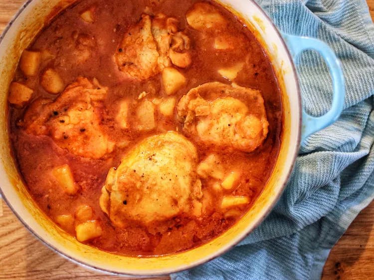

Home
Pollo Guisado Recipe

This Spanish pollo guisado, or chicken stew is delicious and easy. It's great for entertaining and makes for great leftovers. Serve it over white rice.
Ingredients
- 2 tablespoons olive oil
- 1 whole chicken, cut up
- salt and ground black pepper to taste
- 1 medium onion, chopped
- 4 cloves garlic, minced
- ½ cup sofrito
- 2 potatoes, peeled and cubed
- 2 cups chicken broth
- 1 (8 ounce) can tomato sauce
- 1 (1.41 ounce) package sazon seasoning
- ½ teaspoon ground cumin
- 1 bay leaf
- 2 tablespoons cold water
- 1 tablespoon cornstarch